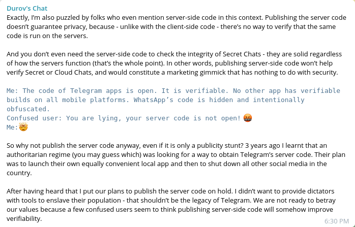

Wed 13 Jan 2021
Over the years Telegram has become a pretty popular messaging platform. Being it because of the multitude of features it offers (such as bots and channels) or because it does not (seems) to care about what you use it for or because of its well-advertised “security” many people, including myself, are daily users of Telegram. Moreover Telegram’s name gets thrown around quite a bit every time some more or less questionable ban happens on other platforms (Twitter, Facebook, etc.) as if it were the true and only holy land of online freedom.
Personally, even as an active user, I’m very skeptical of the way Telegram is advertised and I hope I’ll be able to explain why in this article. Keep in mind that my point is not that Telegram is not the holy land it is supposed to be, I may very well be wrong, but just to point out a couple of things that are, to me, a bit odd.
There are two kinds of chats on Telegram: normal chats and secret chats. The key difference is that secret chats are end-to-end encrypted i.e. only you and the other users of the chat can read it, no one in between (e.g. Telegram’s own servers) can. Secret chats are solid regardless of what goes on in the servers, says Durov, and for the sake of the argument we will trust him.
However your default chat on Telegram is not secret; if you want a secret chat you have to create one manually. This state of affairs allows for Telegram to backup all chats and documents to its cloud storage allowing for instant forwarding of even large media files (without having to re-upload them) and other neat features such as shared history between devices. This does not mean that your chats float in the interned unencrypted, the data going and coming from Telegram’s servers is encrypted as usual, but that Telegram holds the keys to decipher it.
There are reasons to believe that most users use mostly (if not only) normal chats. Public groups are normal chats and, since they are more convenient in terms of features (and even in terms of actually starting one, if even by a few clicks), most one-to-one chats will be normal chats as well. A problem now arises: how can we be sure that Telegram does not do shady things with the data coming from all these normal chats?
“Wait, but Telegram is open source! We can check what it does with our data!”
Indeed on Telegram’s own website you can read that “Telegram has an open API and source code free for everyone.” but this is, sadly, not all the truth. Having an open API is sure good if you want to make your own client for some reason but the part about the source code being free for everyone is only true of the clients (the software you use) but not of the servers (the software that they run).
In a vacuum this means that you can read the source code of, say, your Android app and be sure it isn’t monitoring all your taps, logging what you write or profiling how much time you spend in each of your chats but you cannot know what the server does with the data you give it. The server, able to decipher your normal chats, could, for instance run any sort of analysis tool on the messages you write or, more scarily, people at Telegram HQ could know that you just deleted that message with an embarrassing spelling error in it.
The only way to know that this is or isn’t the case is to read the source code. But the Telegram server-side code has never been published. In this conditions is it reasonable to be skeptical of Telegram and particularly of their advertising campaign.
Durov, Telegram’s founder, recently finally answered this question in his channel’s chat. Here’s the full message:
So let’s tackle this is order.
“Publishing the server code does not guarantee we’re not doing shady stuff, because there is no way to be sure that we’re actually not running some other code.”
This much is true, but it is actually the point. If there is no way to check the code that’s running on the server that is actually a hell of a good reason to open source it! Indeed if Telegram were open source and if me and my non-existent group of equally paranoid friends wanted to use it and be sure that the servers were not running some modified version we could simply take the code and make our own server. If the code were open any person that does not trust the official Telegram servers could spin their own or move to other instances that they (for a reason of another) happen to trust.
As long as Telegram’s code is not publicly available if you want to use Telegram you have to trust the official servers, this seems to me to be ad odds with the claims of security and freedom that Durov constantly makes.
As above we trust Durov on secret chats, that is not the point of this article.
That’s just some useless mockery. We know WhatsApp is bad, that is not the point.
Finally the last section is very weird and does not really make any sense to me. First of all the plan of creating an equally convenient clone of Telegram to then shut down all other social media to spy on your population seems needlessly contrived to me. If we’re talking about an authoritarian regime I would assume they can just walk to any company and force them to write something similar to Telegram and then shut everything down. Heck if you’re shutting everything down anyway it does not even need to be as convenient as Telegram, it just needs to have the bare minimum of features to trick people into using it (and a big chunk of Telegram’s features do not make the cut).
Moreover I want to point out that, if a regime is able to shut down all social media, it is just because they are highly centralized things: you only need to cut the one and only one route people have to the service. But if Telegram’s source code were open, as I already explained above, people would be able to spin their own servers making it way harder for the oppressors to cut all these connections and enforce their own platform.
Ironically putting on hold the “plans” for the release of the server’s code does not deprive dictators useful tools, but rather it gives them one less problem to think about. Open sourcing Telegram would not be a betrayal of Telegram’s alleged values but rather it would show that the company really cares about them.
Yeah, don’t ERP on Telegram if you can avoid it.